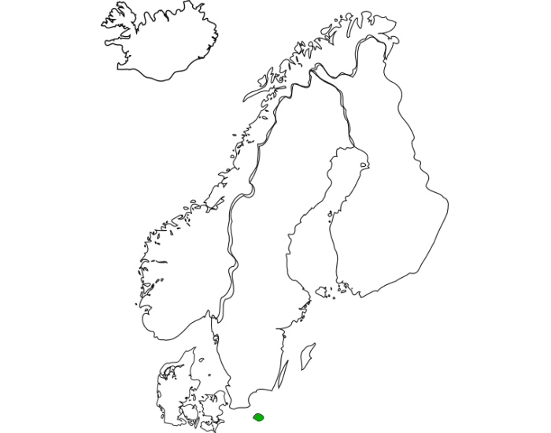
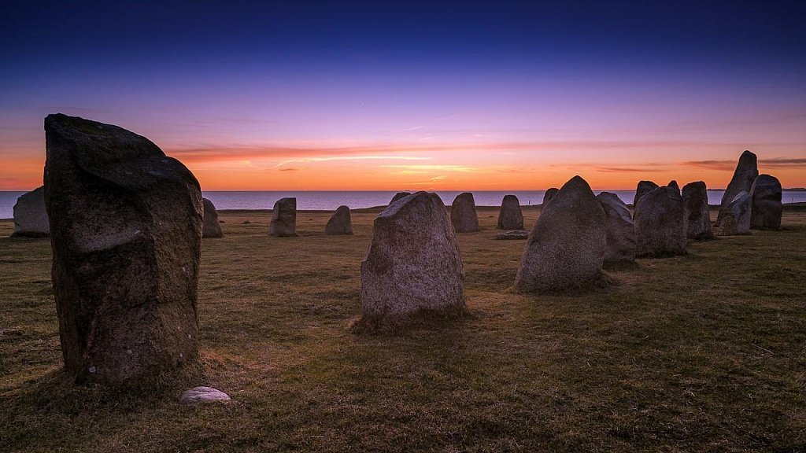
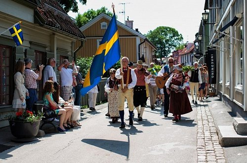
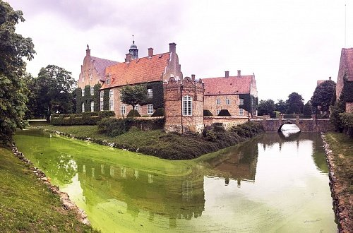
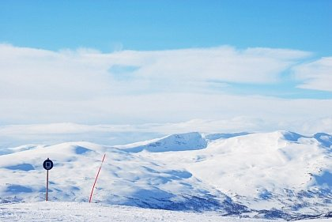

Швеция - государство, находящееся в Северной Европе на Скандинавском полуострове.
Её территория составляет 447 млн км² и проживает в ней 10 млн человек - крупнейшее
скандинавское королевство. Среди стран Европы занимает 5-е место по территории.

Столица Швеции - Стокгольм. Это город с большой историей, красивой архитектурой. Здесь вы
можете заметить и увековеченные здания с эпохи Средневековья, и также нашей эпохи!
Стокгольм известен своей богатой культурой. Здесь жили и работали знаменитые люди,
основывались разнообразные культурные учреждения. В 1998 году он был избран
европейской культурной столицей.
Культура Швеции заключается в аспектах бытия самих шведов: лютеранство, профсоюзное
движение, уверенность в себе и тому подобное.Различные исторические периоды также
влияли на формирование шведской культуры или выражали шведскую ментальность.
Так, Швеция отменила рабство к середине XIV века, также не было у шведов крепостного
права, крестьянство составляло около 40% населения, и было одним из четырёх сословий (
вместе с дворянами, духовенством и горожанами) в Риксдаге.
Древние образцы шведского искусства находятся в церквях: настенные фрески,
алтарная часть. представляющие религиозные убеждения: чистилище, дьявола,
Иисуса Христа и Деву Марию.
Наиболее яркий представитель стиля рококо в Швеции — художник Густаф Лундберг,
имевший европейскую известность. Среди его парадных портретов особый интерес
представляет портрет за партией в шахматы Густава Бадина, в прошлом чернокожего
мальчика-раба, ставшего придворным и государственным деятелем трёх шведских
королей. В XIX веке художник Карл Ларссон (1853-1919) сформировал образ идиллического
дома сельской местности с его наивными живописными иллюстрациями.
История
Заселять территорию Скандинавского полуострова предки современных шведов начали сразу же после ледникового
периода. К
VIII веку здешние обитатели открыли в себе склонность к военному ремеслу, чем тут же поспешили
воспользоваться. Вплоть
до XI столетия викинги наводили ужас на соседние страны Европы, бороздя на утлых ладьях морские просторы и
грабя всех,
кто под руку попадется.

Постепенно, закладывая основы государственности, объединяясь в выгодные для себя унии и выходя из них, Швеция
снискала
себе славу сверхдержавы. Способствовали укреплению престижного статуса и превосходно налаженные торговые
связи, а также
могущественная армия. Сбить спесь с заносчивых скандинавов помогла Северная война, в результате которой России
удалось
оторвать у своего сурового соседа приличный кусок территорий.
Основные туристические направления
Традиционно королевство делится на три историко-географических области. Самый обласканный вниманием туристов
регион –
Гёталанд. Во-первых, потому что это юг Швеции с более благоприятными климатическими условиями
и богатейшим прошлым:
местные жители авторитетно заявляют, что все события саги о Беовульфе происходили именно на гётландской земле.
Во-вторых, конкретная область вместила в себя два таких крупных культурных центра, как Мальмё
и Гётеборг.


Свеаланд или центральный регион можно полюбить уже только за то, что на его земле выросла шведская столица.
Кроме того,
это край синих озер, пасторальных пейзажей и сказочных замков. Свеаланд идеален для тех, кто приехал в Швецию
надышаться
атмосферой прошлого и побродить по местам, которые в свое время облюбовали неустрашимые викинги. Древняя
столица этих
бесшабашных вояк (Сигтуна) находится как раз на берегу прекраснейшего озера Меларен. Кстати, в этом
очаровательном и
теперь уже провинциальном городе можно отыскать полторы сотни каменных рун, над расшифровкой значения которых
лингвисты
будут ломать голову еще не одну сотню лет.

Все лучшие горнолыжные трассы спрятаны в самой северной области страны, Норрланде. Фантастическое царство
снега и льда,
ягодный край с топкими болотами и затянутыми мхами лесами, по которым беспрепятственно разгуливают стада
оленей – все
это северная Швеция. Вдобавок ко всему Норрланду достался один из живописнейших кусочков Лапландии – места,
где еще
можно встретить коренных обитателей европейского севера, народ саами.